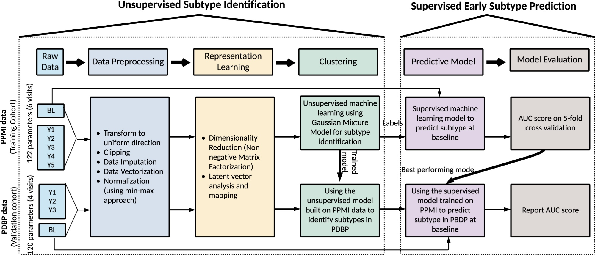
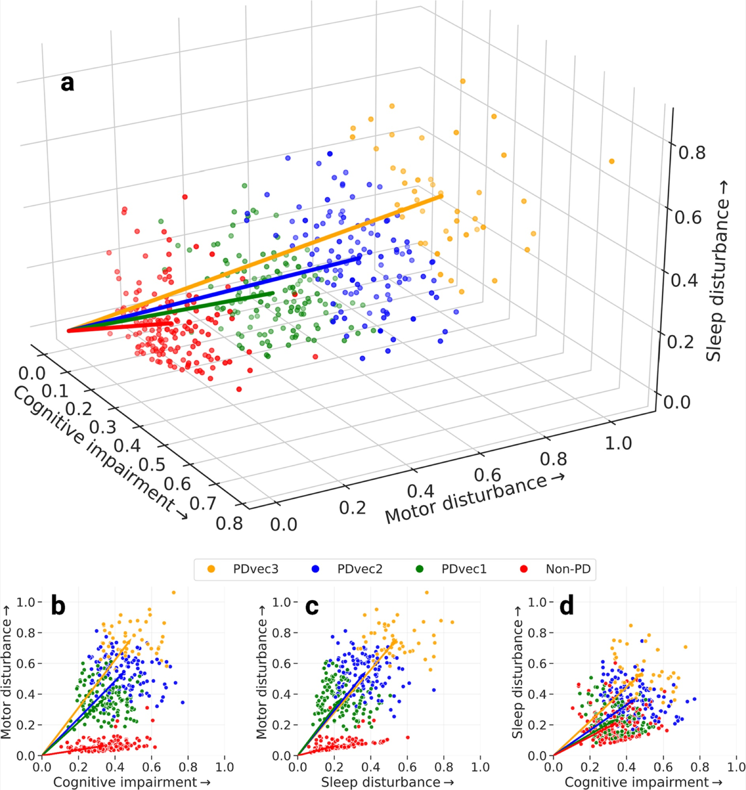
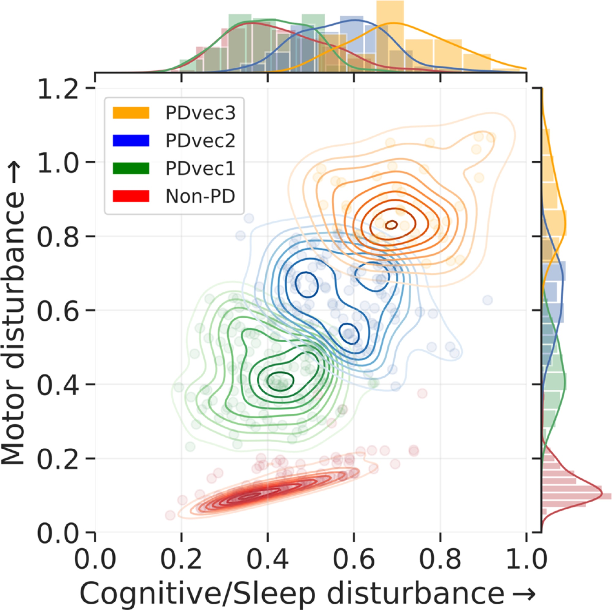
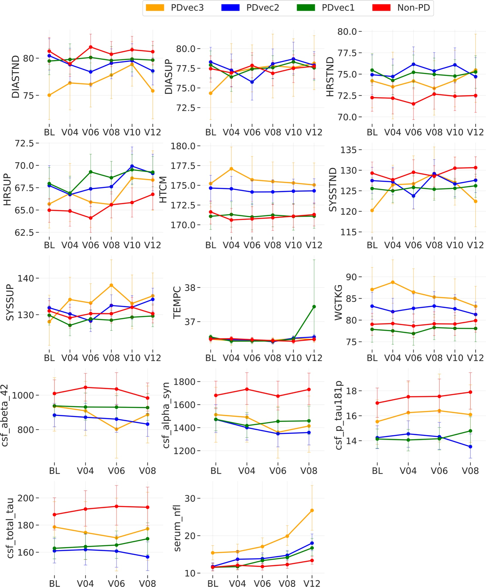
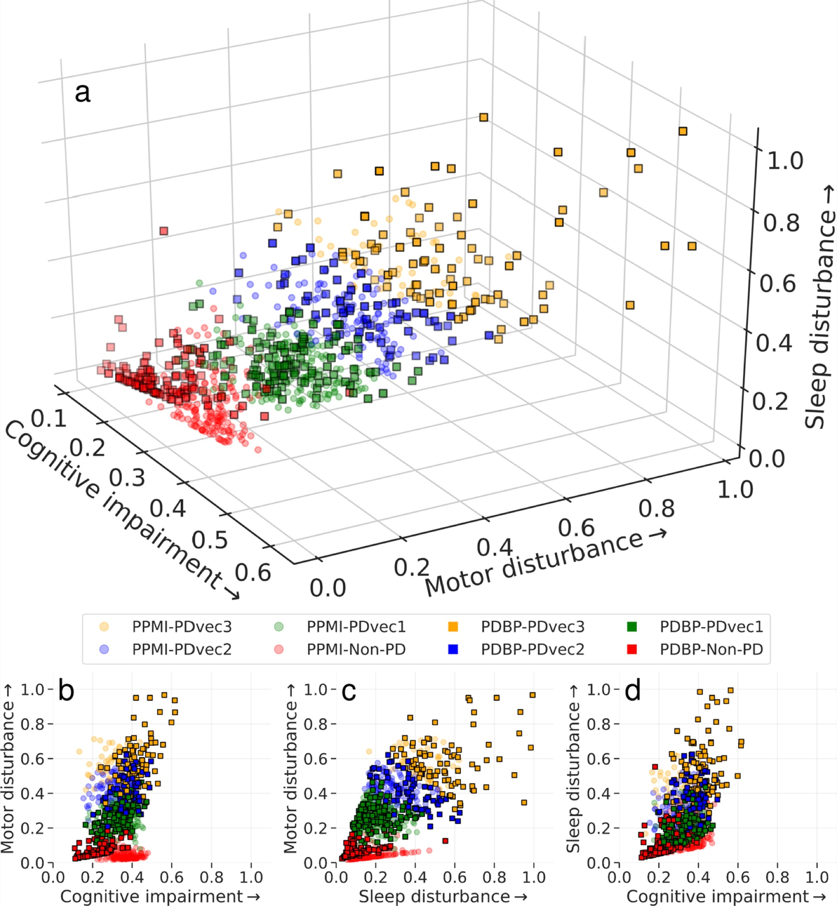
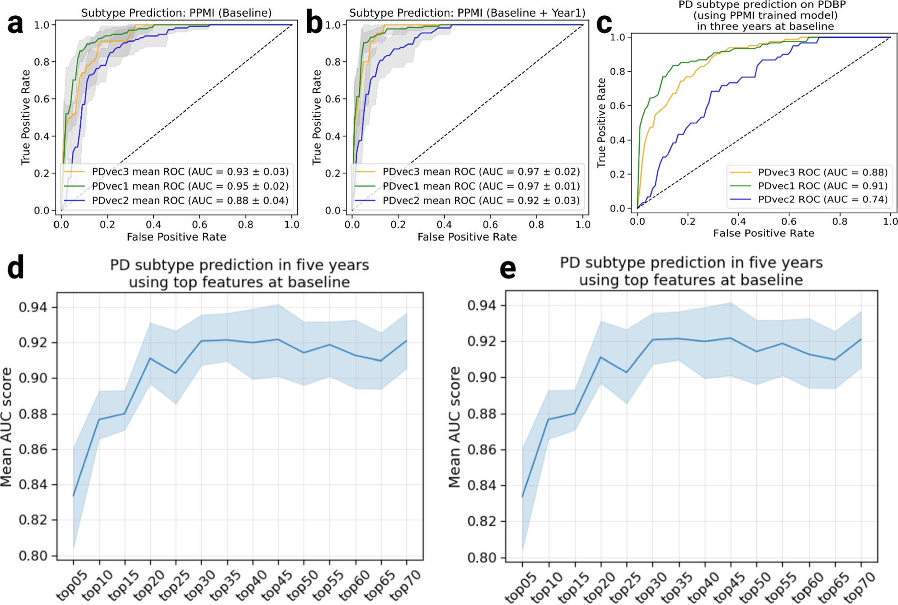
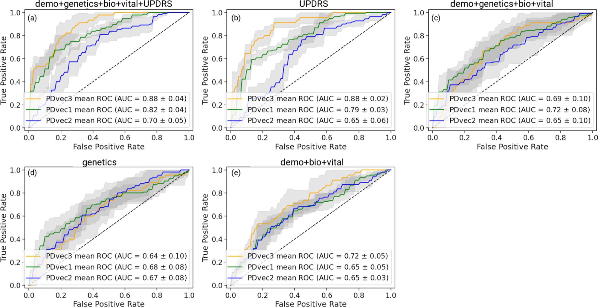
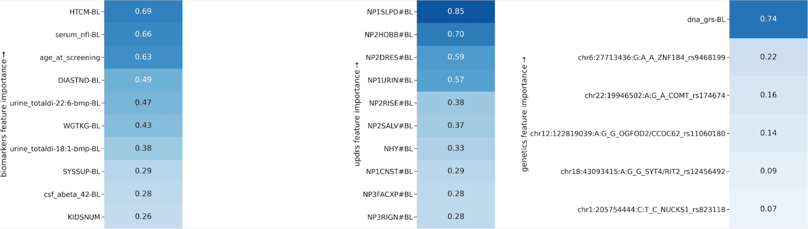

Abstract
The clinical manifestations of Parkinson’s disease (PD) are characterized by heterogeneity in age at onset, disease duration, rate of progression, and the constellation of motor versus non-motor features. There is an unmet need for the characterization of distinct disease subtypes as well as improved, individualized predictions of the disease course. We used unsupervised and supervised machine learning methods on comprehensive, longitudinal clinical data from the Parkinson’s Disease Progression Marker Initiative (n = 294 cases) to identify patient subtypes and to predict disease progression. The resulting models were validated in an independent, clinically well-characterized cohort from the Parkinson’s Disease Biomarker Program (n = 263 cases). Our analysis distinguished three distinct disease subtypes with highly predictable progression rates, corresponding to slow, moderate, and fast disease progression. We achieved highly accurate projections of disease progression 5 years after initial diagnosis with an average area under the curve (AUC) of 0.92 (95% CI: 0.95 ± 0.01) for the slower progressing group (PDvec1), 0.87 ± 0.03 for moderate progressors, and 0.95 ± 0.02 for the fast-progressing group (PDvec3). We identified serum neurofilament light as a significant indicator of fast disease progression among other key biomarkers of interest. We replicated these findings in an independent cohort, released the analytical code, and developed models in an open science manner. Our data-driven study provides insights to deconstruct PD heterogeneity. This approach could have immediate implications for clinical trials by improving the detection of significant clinical outcomes. We anticipate that machine learning models will improve patient counseling, clinical trial design, and ultimately individualized patient care.
Core contributions
- 1A data-driven progression spaceFive years of 122 clinical measures are compressed into three interpretable dimensions of decline: motor, sleep and cognitive.
- 2Three progression subtypesUnsupervised clustering finds slow, moderate and fast progressors (PDvec1–3), with clearly separated progression rates.
- 3Prediction at diagnosisA patient’s five-year subtype can be predicted from baseline data alone (average AUC 0.92), and even better after one year of follow-up (0.95).
- 4Replicated in a second cohortSubtypes and predictions carry over to the independent PDBP cohort, recruited under a different protocol (prediction AUC 0.84).
- 5Biomarker insightsSerum neurofilament light rises faster in fast progressors, and models combining clinical scores, biomarkers and genetics are compared.
- 6Open scienceCode is open source and an interactive dashboard lets anyone explore the progression space.
Method
1Two cohorts
We trained on the Parkinson’s Progression Markers Initiative (PPMI): 294 people with PD and 154 controls followed for 60 months, with yearly visits. We validated on the independent Parkinson’s Disease Biomarkers Program (PDBP): 263 people with PD and 115 controls followed for 36 months. For each person we used 122 clinical measures (120 in PDBP), including the MDS-UPDRS motor and non-motor scales and tests of cognition, sleep, mood and autonomic function.
2Building a progression space
We aligned every measure so that higher means worse, clipped outliers, filled small gaps between visits, and normalized the data. Non-negative matrix factorization then compressed each patient’s five-year record into a few latent dimensions, which movement-disorder specialists mapped to motor, sleep and cognitive decline. A Gaussian mixture model on this space, with the number of groups chosen by the Bayesian information criterion, found the subtypes.
3Predicting subtypes early
With the subtypes as labels, we trained supervised models to predict each patient’s five-year subtype from their baseline visit, from baseline plus year one, and from biomarkers and genetics. We evaluated them with five-fold cross-validation on PPMI and then tested them on PDBP.
Results
1Three progression subtypes
- Motor decline dominates the progression space (63.6% of variance), followed by sleep (21.8%) and cognition (14.6%).
- Three subtypes: 45% of PPMI patients were slow progressors (PDvec1), 39% moderate (PDvec2) and 16% fast (PDvec3), with non-overlapping confidence intervals on both axes.


2Biology of the subtypes
- Serum neurofilament light rises faster in fast progressors than in slow progressors (P < 0.005), and fast progressors lose more height and weight over time.
- Genetic risk plays a small role: a higher PD genetic risk score was weakly linked to slower progression.

3Replication in an independent cohort
Applying the PPMI model to PDBP gave the same three subtypes with similar progression patterns (46% slow, 23% moderate, 31% fast), even though PDBP was recruited under a different protocol and has only three years of follow-up.

4Predicting progression at diagnosis
- Baseline data alone predicts the five-year subtype with an average AUC of 0.92; adding year-one data raises it to 0.95.
- It works in a new cohort: trained on PPMI and tested on PDBP, the model reached an AUC of 0.84, strongest for the slow and fast groups.
- Twenty features are enough for an AUC above 0.90; most of them are motor measures.
| Setting | Slow | Moderate | Fast | Average AUC |
|---|---|---|---|---|
| Baseline onlyPPMI, five-fold cross-validation | 0.94 | 0.86 | 0.95 | 0.92 |
| Baseline + year 1PPMI, five-fold cross-validation | 0.97 | 0.91 | 0.97 | 0.95 |
| Baseline, new cohorttrained on PPMI, tested on PDBP | 0.91 | 0.73 | 0.88 | 0.84 |

Analysis
1Can biomarkers and genetics predict subtypes?
- Combining sources works best: clinical scores (UPDRS) with demographics, biospecimens, vital signs and genetics reached an AUC of 0.80.
- Each source alone is weaker: UPDRS alone 0.77, demographics, vitals and biospecimens 0.67, and genetics 0.66.
- Key markers include age, height, weight, cerebrospinal-fluid measures and serum neurofilament light.


In the news
- Machine learning models help identify subtypes of Parkinson disease — Neurology Advisor
- Predicting Parkinson’s disease with machine learning — Precision Medicine, Oxford Global
- Machine learning to help predict PD progression? — NeuroDerm
BibTeX
@article{dadu2022identification,
title = {Identification and prediction of {Parkinson's} disease subtypes
and progression using machine learning in two cohorts},
author = {Dadu, Anant and Satone, Vipul and Kaur, Rachneet and
Hashemi, Sayed Hadi and Leonard, Hampton and Iwaki, Hirotaka and
Makarious, Mary B and Billingsley, Kimberley J and
Bandres-Ciga, Sara and Sargent, Lana J and Noyce, Alastair J and
Daneshmand, Ali and Blauwendraat, Cornelis and Marek, Ken and
Scholz, Sonja W and Singleton, Andrew B and Nalls, Mike A and
Campbell, Roy H and Faghri, Faraz},
journal = {npj Parkinson's Disease},
volume = {8},
pages = {172},
year = {2022},
doi = {10.1038/s41531-022-00439-z}
}Acknowledgments
We thank the patients and their families who contributed to this research. This research was supported in part by the Intramural Research Program of the National Institute on Aging (NIA) and National Institute of Neurological Disorders and Stroke (NINDS), both part of the National Institutes of Health, within the Department of Health and Human Services; project number ZIA AG000534, ZO1 AG000949, ZIA-NS003154, and the Michael J Fox Foundation. This work has also been supported in part through the grant 1U54GM114838 awarded by NIGMS through funds provided by the trans-NIH Big Data to Knowledge (BD2K) initiative. Data used in the preparation of this article were obtained from the Parkinson’s Progression Markers Initiative (PPMI) database; PPMI is a public–private partnership funded by the Michael J. Fox Foundation for Parkinson’s Research and funding partners. Data and biospecimens were also obtained from the Parkinson’s Disease Biomarkers Program (PDBP) Consortium, part of the National Institute of Neurological Disorders and Stroke at the National Institutes of Health; the PDBP Investigators have not participated in reviewing the data analysis or content of the manuscript. Open access funding was provided by the National Institutes of Health.